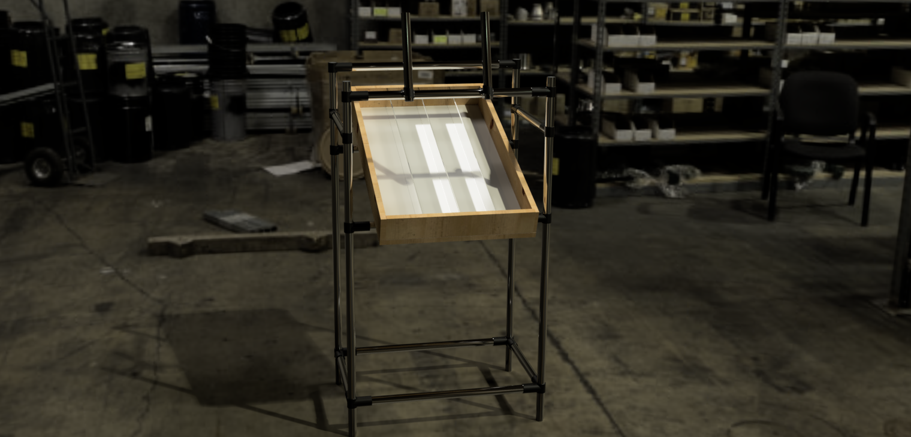

{{ "Acerca de mi" | Uppercase }}
Soy un ingeniero mecatronico con intereses en el diseño, modelado y manufactura de modelos 3d. Mi experiencia actual se centra en la industria automotriz donde he desarollado elemntos de apoyo para la manufactura de los sistemas electricos de un auto. Esto conlleva la creacion de elementos mecanicos para el incremento de la ergonomia, asi como la optimizacion de los flujos de trabajo. Ademas cuento con experiencia en los ambitos de electronica y programacion.He completado mi ingeneira en la Universidad Autonoma de Yucatan en diciembre del 2021
Esta pagina contiene algunos de los modelos que he desarollado en mi estadia laboral desde la finalizacion de mi carrera.
{{ "Proyectos" | Uppercase }}



{{ "Experiencia laboral" | Uppercase }}